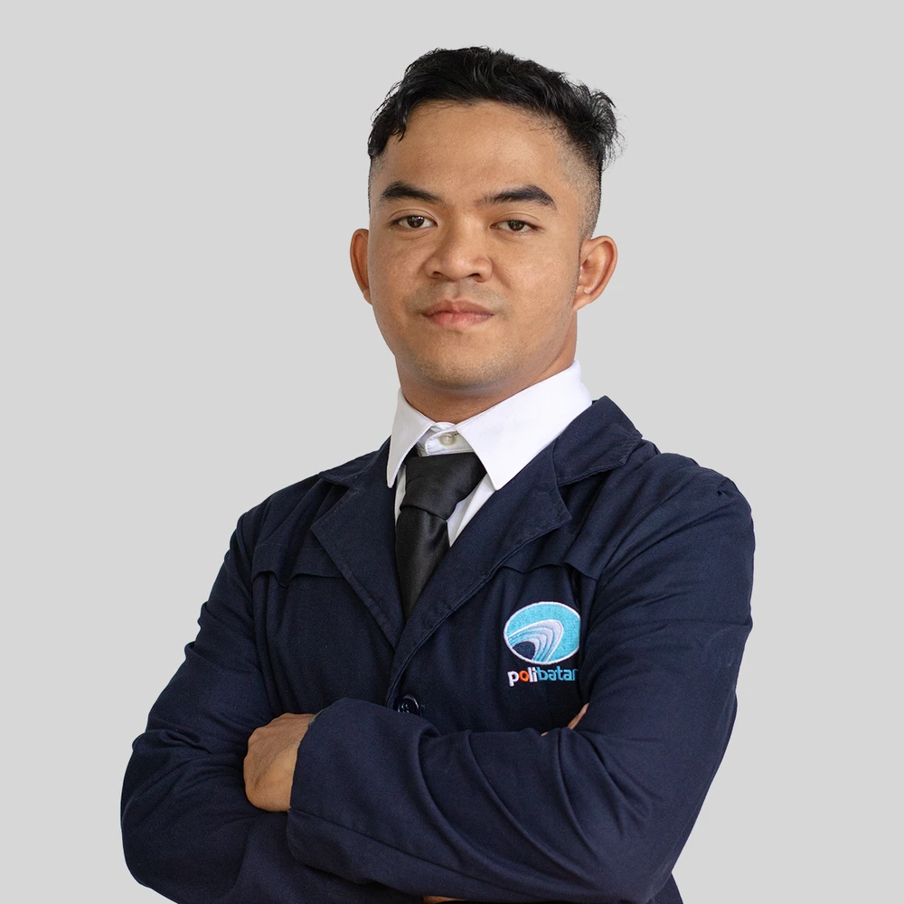

Pendidikan
Politeknik Negeri Batam – Batam
Teknik Informatika – D4 Teknik Multimedia & Jaringan, IPK: 3.67/4.00
Agustus 2022 – Sekarang
SMK Negeri 5 Batam – Batam
Jurusan Produksi Grafika, nilai akhir: 85.65
Juli 2019 – Juli 2022

Mahasiswa Politeknik Negeri Batam yang berfokus pada Multimedia, Videografi, Produksi Konten, Desain Grafis, serta UI/UX untuk website dan aplikasi mobile.
Selamat datang di portofolio saya. Di sini Anda dapat melihat perjalanan akademik, pengalaman profesional, proyek kreatif, dan keterampilan yang terus saya kembangkan untuk berkontribusi di industri kreatif dan teknologi.
Pengalaman kerja dan magang saya memberikan banyak pelajaran berharga tentang bagaimana dunia profesional sebenarnya berjalan. Di berbagai peran dan lingkungan kerja, saya belajar menerapkan keahlian secara langsung, beradaptasi dengan cepat, dan berkolaborasi secara efektif. Setiap pengalaman ini membantu saya tumbuh. bukan hanya secara teknis, tapi juga secara pribadi dan profesional.
Berikut adalah beberapa proyek yang telah saya kerjakan, baik secara individu maupun dalam tim. Proyek-proyek ini mencerminkan bagaimana saya menerapkan keahlian di bidang videografi, desain grafis, UI/UX, hingga pengembangan game dalam bentuk karya nyata yang kreatif dan berdampak. Setiap proyek adalah peluang untuk belajar dan berkembang lebih jauh.
Saya memiliki beragam keahlian teknis dan kreatif yang terus saya kembangkan seiring waktu. Mulai dari desain grafis, editing video, hingga pengembangan aplikasi dan game. setiap keterampilan saya pelajari dengan semangat eksplorasi dan rasa ingin tahu yang tinggi. Di bagian ini, saya merinci kompetensi utama saya yang mendukung kontribusi saya dalam berbagai proyek dan kolaborasi.
Terlibat dalam kegiatan volunteer memberikan saya kesempatan untuk berkontribusi secara nyata kepada masyarakat sekaligus belajar banyak hal baru. Dari pengalaman ini, saya mengasah kemampuan bekerja dalam tim, beradaptasi dengan lingkungan yang beragam, serta memperkuat keterampilan komunikasi dan empati.
Saya percaya bahwa pembelajaran tidak berhenti di bangku kuliah. Karena itu, saya aktif mengikuti berbagai sertifikasi dan pelatihan untuk terus mengasah kemampuan dan memperluas wawasan. Komitmen ini membantu saya tetap relevan dengan perkembangan industri serta menambah nilai dalam setiap peran yang saya jalani.
Pendidikan formal dan pengalaman organisasi menjadi fondasi penting dalam membentuk cara saya berpikir dan bekerja. Melalui pembelajaran dan partisipasi aktif dalam organisasi, saya mengembangkan kemampuan kolaborasi, komunikasi, serta kepemimpinan.
Teknik Informatika – D4 Teknik Multimedia & Jaringan, IPK: 3.67/4.00
Agustus 2022 – Sekarang
Jurusan Produksi Grafika, nilai akhir: 85.65
Juli 2019 – Juli 2022
Divisi Produksi (2023–2024), Anggota Umum (2025–2026)
Terlibat dalam program produksi, workshop kreatif, festival, pengaderan, dan kegiatan internal organisasi.
Kementerian KOMINFO – Magang (2024)
Terlibat dalam pengaderan, forum media ormawa, pengabdian staf muda, dan kegiatan internal BEM.
Anggota (2020–2022)
Berkolaborasi dalam produksi beberapa film pendek komunitas.
Saya terbuka untuk peluang kerja, kolaborasi proyek, dan diskusi kreatif. Silakan hubungi saya melalui salah satu kanal berikut.